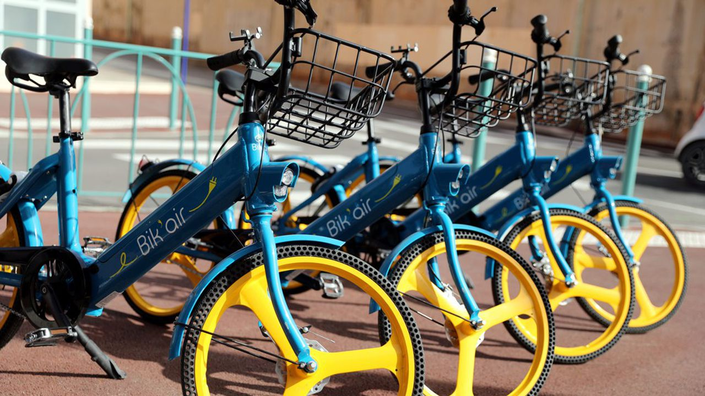
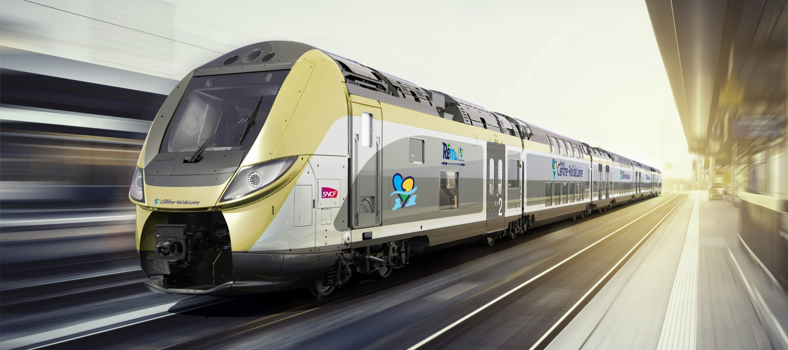
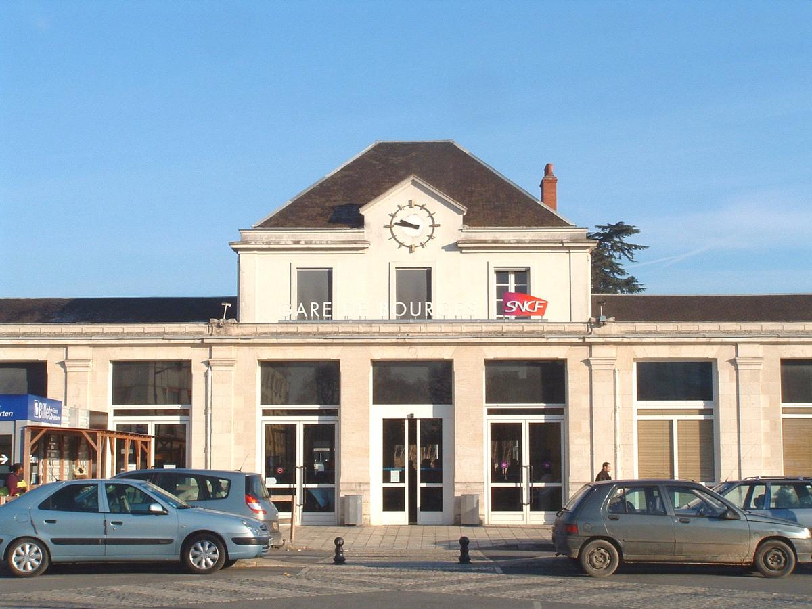
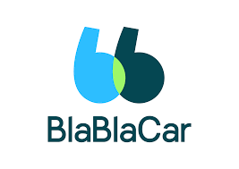

Le transport de l'agglomération berruyère est constitué d'un réseau d'autobus qui dessert Bourges
et les 19 communes de son agglomération, mis en place par le Syndicat mixte intercommunal des
transports urbains de l'agglomération de Bourges sous la marque AggloBus.
Depuis 2011, le réseau est exploité par RATP Dev, dans le cadre d'une délégation de service
public accordée par le Syndicat intercommunal Agglobus1. Le contrat avec RATP Dev a été
renouvelé en 2017 pour la période allant jusqu'en 20221.
Bik’air vous offre une flotte de vélos électriques en libre service en villes médianes sans stations ni bornes. Bik’air, en villes médianes, vous connecte à tous vos lieux de destination préférés en vous offrant une nouvelle expérience de transport plus ludique, plus flexible et plus écologique !
La Région est responsable de l’organisation de tous vos transports publics non urbains en Centre-Val de Loire. Le réseau REMI est le nom du réseau multimodal organisé par la Région, qui comprend des trains Rémi Express, des trains Rémi et des cars Rémi qui comprennent au sein de chaque département, et hors zones urbaines les anciennes lignes de cars TER, les lignes régulières interurbaines, les lignes de transport à la demande et les lignes de transports scolaires.
La Région est responsable de l’organisation de tous vos transports publics non urbains en Centre-Val de Loire. Le réseau REMI est le nom du réseau multimodal organisé par la Région, qui comprend des trains Rémi Express, des trains Rémi et des cars Rémi qui comprennent au sein de chaque département, et hors zones urbaines les anciennes lignes de cars TER, les lignes régulières interurbaines, les lignes de transport à la demande et les lignes de transports scolaires.
La gare de Bourges est une gare ferroviaire française, située sur le territoire de la commune de Bourges, préfecture du département du Cher, en région Centre-Val de Loire. C'est une gare voyageurs de la Société nationale des chemins de fer français (SNCF), desservie par des trains de grandes lignes et des trains régionaux. Elle est également ouverte au service des marchandises.
BlaBlaCar est un réseau de transport fondé sur une communauté de plus de 100 millions de membres, qui partagent des trajets en covoiturage et en bus dans 22 pays. BlaBlaCar met la technologie au service de l’environnement et de l’humain en optimisant le remplissage des sièges vides sur les routes, et rend le voyage plus économique et pratique. Chaque année 1,6 million de tonnes de CO2 sont économisées et 120 millions de connexions humaines sont créées sur BlaBlaCar.
